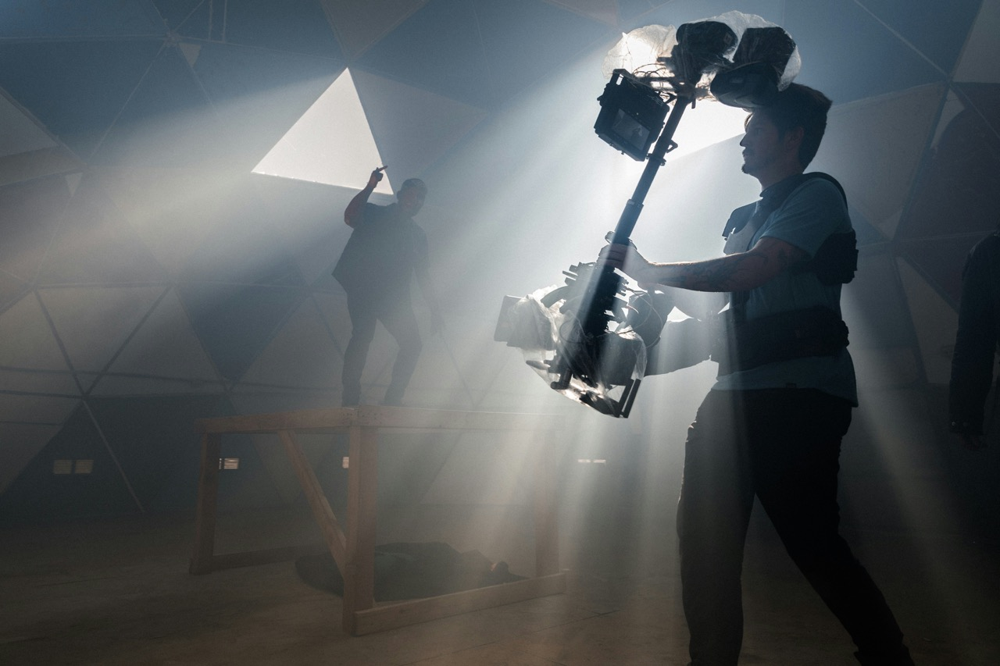
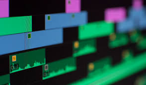
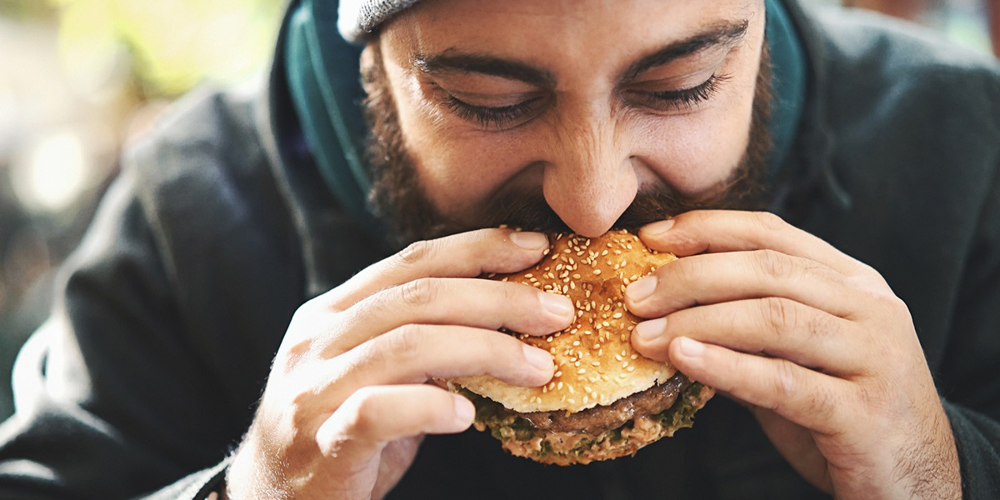

I love to play football. Even in my secondary school, I used to play tournaments and matches. Mostly, I love Ronaldo.
Singing is one of my favorite hobbies. I enjoy singing various genres of music, especially pop and classical. It helps me relax and express my emotions. I often participate in local singing competitions and events.

Writing is one of the most creative thing I do on my free time. I usually compose new songs and poems which I have already created in my mind throughout the day. Whenever I fell stressed I sit down and write which helps to reduce it.
I watch a lot of south indian movies in my free time. More than just a fun, it give sme knowledge about Camera angles, cinematography, directors vision and Background music.
During My free time I shoot and Edit the Videos. Basically I edit the videos for my clients and for myself too.
I also like to code and program during Free time. Basically I like to play with AI.

I like to eat a lot. If I get a change, I never miss.
